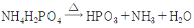
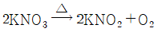
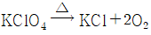
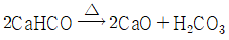

위험물기능사 (2004-10-10 기출문제)
1과목: 화재 예방과 소화방법
1. 액화 이산화탄소 1kg이 25℃의 대기중으로 방출되었을 때 대기 중 기체상의 이산화탄소의 부피(ℓ )는? (단, CO2의 분자량은 44이고 대기압은 1atm이다.)
- 555.36
- 509
- 1964
- 985.6
(정답률: 45%)

2. 제3종 분말소화약제의 열분해 반응식을 옳게 나타낸 것은?




(정답률: 72%)
3. 소화제(消化劑)로서 사용할 수 없는 물질은?
- 액화 이산화탄소
- 인산암모늄
- 탄산수소나트륨
- 아세톤
(정답률: 73%)
4. C급 화재에 대한 소화기의 적응성으로 옳은 것은?
- 일반화재
- 전기화재
- 유류화재
- 금속화재
(정답률: 83%)
5. 인산암모늄 소화약제의 적응 화재를 바르게 나타낸 것은?
- AB
- BC
- AC
- ABC
(정답률: 66%)
6. 옥내소화전의 개폐밸브 및 호스접속구는 바닥면으로부터 얼마 이하의 높이에 설치하여야 하는가?
- 1.0m
- 1.5m
- 2.0m
- 2.5m
(정답률: 69%)
7. 제4류 위험물을 저장하는 옥외탱크저장소의 방유제 내부에 화재가 발생한 경우의 조치방법으로 가장 옳은 것은?
- 소화활동은 방유제 내부의 풍하로 부터 행하여야 한다.
- 방유제 내의 화재로부터 방유제 외부로 번지는 것을 방지하는데 최우선적으로 중점을 둔다.
- 포방사를 할 때에는 탱크측판에 포를 흘려 보내듯이 행하여 화면을 탱크로부터 떼어 놓도록 한다.
- 화재진압이 어려운 경우에도 탱크속의 기름을 파이프라인을 통해 빈 탱크로 이송시키는 것은 연소확대방지를 위해 하지 않는다.
(정답률: 24%)
8. 옥외탱크저장소 중 "특정옥외탱크저장소"라 함은 그 저장 또는 취급하는 액체위험물의 최대수량이 얼마인 경우 인가?
- 100만 ℓ 이상
- 50만 ℓ 이상, 100만 ℓ 미만
- 50만 ℓ 이상
- 200만 ℓ 이상
(정답률: 42%)
9. 불소계 계면활성제가 주성분이며 특히 기름 화재용 포액으로서 가장 좋은 소화력을 가진 포(Foam)는?
- 단백포액
- 플루오르화 단백포액
- 수성막포액
- 알코올포
(정답률: 68%)
10. 간이 소화제에 해당 되지 않은 것은?
- 마른 모래
- 팽창질석
- 팽창진주암
- 포말소화기
(정답률: 63%)
11. 포말소화기에서 분사된 포가 소화면에서 가져야 하는 성질로 옳지 않은 것은?
- 포는 화면에 부착성이 좋아 공기 중의 산소공급을 차단해야 한다.
- 포는 유동성이 좋아 소화면을 골고루 덮어야 한다.
- 포는 열에 잘 견디어서 소포되지 않아야 한다.
- 포는 소화면에서 팽창하여야 하므로 응집성이 작아야 한다.
(정답률: 60%)
12. 소화약제가 갖추어야 될 성질과 거리가 먼 것은?
- 현저한 독성이나 부식성이 없어야 한다.
- 열과 접촉 시 현저한 독성을 발생하지 않아야 한다.
- 저장 안정성이 있어야 한다.
- 부유물이나 침전에 의해 분리가 잘 되어야 한다.
(정답률: 71%)
13. 다음 중 공기 중에서 서서히 산화되어 황갈색으로 되는 은백색의 분말로 기름이 묻은 분말일 경우에는 자연 발화의 위험이 있는 것은?
- 철분
- 적린
- 황화린
- 유황
(정답률: 40%)
14. 분말소화약제를 방출시키기 위해 가압용 가스를 사용하는데 일반적으로 가장 많이 사용되는 것은?
- 산소
- 질소
- 이산화탄소
- 공기
(정답률: 56%)
15. 착화온도가 낮아지는 요인이 아닌 것은?
- 압력이 높다.
- 습도가 높다.
- 발열량이 크다.
- 분자구조가 복잡하다.
(정답률: 32%)
16. 소화에 대한 설명으로 가장 거리가 먼 것은?
- 연소되고 있는 곳에서 가연물을 제거하면 연소반응은 더 이상 확산되지 않는다.
- 연소에서는 산소가 필요하므로 차단하면 질식소화가 된다.
- 공기 중의 산소 농도를 15%(부피비)이하로 떨어뜨리는 것이 좋다.
- 연소가 일어나면 다른 분자에 점차로 활성화 에너지를 감소시킨다.
(정답률: 58%)
17. 스프링클러 설비의 특징에 대한 것 중 옳지 않은 것은?
- 화재의 초기 진압에 효율적이다.
- 조작이 간편하다.
- 감지부의 구조가 기계적으로 작동이 정확하다.
- 다른 소화 설비보다 구조가 간단하고 값이 싸다.
(정답률: 77%)
18. 착화에너지의 부족으로 열분해가 충분치 않아 연소하지 못할 때 일어나는 현상은?
- 조해현상
- 탄화현상
- 풍화현상
- 산화현상
(정답률: 53%)
19. 제3류 위험물의 화재시 가장 적절한 소화제는?
- 마른모래
- 물
- 스프링클러
- 방화수
(정답률: 88%)
20. 자연발화의 조건이 아닌 것은?
- 표면적이 넓을 것
- 열전도율이 클 것
- 발열량이 클 것
- 주위의 온도가 높을 것
(정답률: 73%)
2과목: 위험물의 화학적 성질 및 취급
21. 과망간산칼륨의 성질을 설명한 것중 옳은 것은?
- 강력한 산화제이다.
- 알칼리와 반응하지 않는다.
- 물에는 용해하나 에탄올에 불용이다.
- 진한 황산과 접촉하면 서서히 반응한다.
(정답률: 72%)
22. 과염소산칼륨의 성질에 대한 설명 중 틀린 것은?
- 조해성이 있고 물, 디에틸에테르에 잘 녹는다.
- 황산과 반응하면 폭발성가스가 생성된다.
- 가연물과의 혼합시 충격에 의해 폭발한다.
- 무색, 무취 결정 또는 백색분말이다.
(정답률: 42%)
23. 다음 중 염소산나트륨의 화학식으로 올바르게 나타낸 것은?
- NaClO
- NaClO2
- NaClO3
- NaClO4
(정답률: 67%)
24. 과염소산칼륨에 황린을 혼합하거나 마그네슘분을 섞으면 위험하다. 그 이유 중 옳은 것은?
- 외부적 충격만 가해도 폭발하므로
- 전지가 형성되어 열이 발생하므로
- 발화점이 높아지므로
- 용융하므로
(정답률: 57%)
25. 마그네슘(Mg)분에 대한 성질을 옳게 설명한 것은?
- 과열수증기와 작용시키면 수소를 발생한다.
- 가벼운 금속분으로서 비중은 물보다 약간 작다.
- 화재시 소화제로는 CO2, N2를 사용하여 소화한다.
- 산, 알칼리 등과 작용하면 산소를 발생시킨다.
(정답률: 48%)
26. 오황화린(P2S5)이 물과 작용 했을때 발생되는 기체는 어느 것인가?
- 포스핀
- 포스겐
- 황산가스
- 황화수소
(정답률: 56%)
27. 황의 동소체 중 이황화탄소에 녹지 않고 350℃로 가열하여 용해한 것을 찬물에 넣으면 생성되는 것은?
- 고무상황
- 단사황
- 노란색 유동성 황
- 사방황
(정답률: 40%)
28. 나트륨과 칼륨 금속의 성질에 대한 설명 중 틀린 것은?
- 은백색의 경금속이다.
- 물질 저장시 석유 속에 넣는다.
- 물과 작용하여 산소를 발생한다.
- 공기 속에서 융점이상 가열하면 용이하게 연소한다.
(정답률: 57%)
29. 다음은 나트륨의 성질을 설명한 것이다. 틀린 것은?
- 나트륨은 에탄올과 반응하면 수소를 발생한다.
- 수은에 격렬히 녹아 나트륨 아말감을 만든다.
- 물과 반응하여 발열하고 수소가 발생한다.
- 연소할 때의 불꽃색은 자주색을 띈다.
(정답률: 64%)
30. 초산에스테르류의 분자량이 증가할수록 달라지는 성질 중 옳지 않은 것은?
- 인화점이 높아지는 경향이 있다.
- 이성질체수가 줄어드는 경향이 있다.
- 수용성이 감소되는 경향이 있다.
- 증기비중이 커지는 경향이 있다.
(정답률: 40%)
31. 이황화탄소의 성질에 대한 설명 중 틀린 것은?
- 순수한 것은 무색 투명한 액체로 향기가 난다.
- 불순물이 존재하면 황색을 띠며 냄새가 난다.
- 인화점은 -30℃, 끓는점은 약 46℃ 이다.
- 분자량은 86 이며, 증기비중은 3.5 이다.
(정답률: 36%)
32. 제4류 위험물의 공통성질로서 옳지 않은 것은?
- 물보다 가벼운 것이 많으며 전부 물에 용해된다.
- 상온(20℃)에서는 고체로 존재하는 물질은 없다.
- 제4류 위험물은 모두 가연성 물질이다.
- 증기의 비중은 대부분이 공기보다 무겁다.
(정답률: 55%)
33. 벤젠의 일반 성질로 틀린 것은?
- 증기는 유독하다.
- 인화점은 휘발유 보다 낮다.
- 에틸에테르에 잘 녹는다.
- 물에는 거의 녹지 않는다.
(정답률: 47%)
34. 다음 중 질산에스테르류에 해당되는 물질은?
- 니트로글리세린
- 트리니트로페놀
- 셀룰로이드
- 트리니트로톨루엔
(정답률: 49%)
35. 다이너마이트는 다공질 물질(규조토)에 무엇을 흡수시킨 것인가?
- 질산메틸
- 질산에틸
- 니트로셀룰로우스
- 니트로글리세린
(정답률: 58%)
36. 질산에틸의 성질에 관한 설명 중 틀린 것은?
- 증기는 공기보다 무겁다.
- 물에 녹지 않으나 유기용제에 녹는 무색 액체이다.
- 인화점이 30℃ 이므로 겨울에는 인화의 위험이 없다.
- 물보다 무겁고 위험성은 제4류 위험물 제1석유류와 비슷하다.
(정답률: 57%)
37. 다음은 트리니트로톨루엔에 관해서 설명한 내용이다. 틀린 것은?
- 화학식은 C6H2(NO2)3CH3 이다.
- 폭약으로 사용되고 물에 녹지 않는다.
- 별명으로는 T.N.T 혹은 피크르산이라 부른다.
- 사람의 머리카락(모발)을 변색시키는 작용이 있다.
(정답률: 38%)
38. 다음 중 제6류 위험물에 해당 되는 것은?
- 염산(HCl)
- 포름산(HCOOH)
- 아세트산(CH3COOH)
- 과염소산(HClO4)
(정답률: 77%)
39. 다음은 제6류 위험물의 공통적 성질에 대한 설명이다. 틀린 것은?
- 비중은 물보다 크다.
- 피부에 닿으면 매우 위험하다.
- 분해하면 인체에 유해한 가스가 발생한다.
- 비휘발성 액체로서 에탄올과 반응시 탈수작용을 한다.
(정답률: 35%)
40. 강산 중 질산의 성질에 관한 설명 중 올바른 것은?
- 가연성액체이다.
- 환원제로 이용된다.
- 물에 희석할 때 발열한다.
- 무색결정이며 가열하면 산소가 발생한다.
(정답률: 20%)
41. 액체 위험물은 운반용기 내용적의 몇 %이하로 수납해야하는가? (단, 알킬알루미늄은 제외한다.)
- 100%이하
- 98%이하
- 95%이하
- 85%이하
(정답률: 65%)
42. 위험물을 운반할 때 혼재하여도 무방한 것은?
- 제1류와 제2류
- 제1류와 제4류
- 제4류와 제5류
- 제5류와 제3류
(정답률: 52%)
43. 다음은 황린의 성상을 고려한 취급시 주의사항에 대한 설명이다. 관계 없는 것은?
- 산화제와의 접촉을 피할 것
- 물의 접촉을 피할 것
- 화기의 접근을 피할 것
- 고온을 피할 것
(정답률: 73%)
44. 제5류 위험물중에서 취급이 불편하기 때문에 다공질의 규조토에 흡수시켜 폭약으로 사용하고 있는것이 있다. 그 상품명은?
- 고체규조토
- 니트로셀룰로오스
- 다이너마이트
- 면화약
(정답률: 70%)
45. 제6류 위험물의 취급방법으로서 틀린 것은?
- 건조사로 위험물의 비산을 방지한다.
- 습기가 많은 곳에서 취급한다.
- 소화후에는 많은 물로 씻어 내린다.
- 피복이나 피부에 묻지 않게 주의한다.
(정답률: 52%)
46. 위험물을 포장할 때 유의사항으로 바르게 기술한 것은?
- 재질은 어느 것이나 사용할 수 있다.
- 포장의 외부에 품명, 수량등을 표시한다.
- 포장 외부에 혼재 가능 위험물을 표시한다.
- 수납구는 "위로" 라는 글씨를 적색으로 쓴다.
(정답률: 58%)
47. 금속나트륨, 금속칼륨 등을 보호액중에 저장하는 이유에 해당되는 것은?
- 온도를 낮추기 위하여
- 승화하는 것을 막기 위하여
- 공기와의 접촉을 막기 위하여
- 운반시 충격을 적게 하기 위하여
(정답률: 74%)
48. 금수성 물질인 금속칼륨, 금속나트륨 취급시 사고예방 또는 응급조치로 적당치 못한 것은?
- 저장, 취급하는 경우 위험물의 변질, 이물질의 혼입으로 위험성이 증대되지 않도록 한다.
- 피부에 접촉하면 화상 또는 염증을 일으키며 소화시보호구를 착용한다.
- 화재 발생시 주수소화는 금하고, 사염화탄소 소화기를 사용한다.
- 석유(보호액) 속에 넣어 수분의 혼입을 피해서 보관한다.
(정답률: 44%)
49. 아연 분말, 알루미늄 분말의 저장 방법 중 옳은 것은?
- 에틸알코올 수용액에 넣어 보관
- 유리병에 넣어 건조한 곳에 저장
- 폴리에틸렌병에 넣어 수분이 많은 곳에 보관
- 염산 수용액에 넣어 보관한다.
(정답률: 56%)
50. 흑색 감광제로 사용하는 질산염은?
- AgNO3
- Fe(NO3)3
- NaNO3
- KNO3
(정답률: 26%)
51. 아세트알데히드가 위험물안전관리법령상 위험물로 지정된 이유를 설명한 것이다. 연관성이 가장 가까운 것은?
- 자극성 냄새가 나며, 물에 녹기 때문이다.
- 산화되면 아세톤과 폭발성물질이 생성되기 때문이다.
- 수소로 반응하여 산화하면 벤질알코올이 되기 때문이다.
- 끓는점, 인화점, 발화점이 낮아 화재의 위험성이 높기 때문이다.
(정답률: 40%)
52. 다음 중 제4류 위험물에 속하지 않는 것은?
- 메탄올
- 톨루엔
- 니트로글리세린
- 디메틸설파이드
(정답률: 59%)
53. 위험물안전관리법에 명시된 아세트알데히드의 옥외저장탱크에 필요한 설비가 아닌 것은?
- 보냉장치
- 냉각장치
- 철이온 혼입방지장치
- 불활성의 기체 봉입장치
(정답률: 58%)
54. 아세트알데히드 취급설비에는 특정 금속 또는 합금이 접촉하는 경우는 폭발성을 가진 물질을 만든다. 해당되지 않은 금속은?
- 구리
- 은
- 스테인레스
- 수은
(정답률: 46%)
55. 제3류 위험물에 대한 일반적인 성질 중 틀린 것은?
- 인화석회는 적갈색의 괴상이며 물과 반응하여 인화수소를 발생한다.
- 생석회는 고체 또는 분말이며 소석회라 불리는 것도 있다.
- 탄화칼슘은 순수한 것은 백색의 고체이며 물과 반응하여 가연성 가스를 발생한다.
- 금속 나트륨은 은백색 광택이 나는 연한금속이며, 비중은 물보다 가볍다.
(정답률: 30%)
56. 스테아르산(CH3(CH2)16COOH)에 대한 설명 중 틀린 것은?
- 고급지방산의 일종이다.
- 벤젠, 에테르에 녹는다.
- 양초나 비누제조 용도로 사용된다.
- 상온에서 액체로 존재하고 요오드값이 높다.
(정답률: 35%)
57. 다음 물질중 에스테르류에 속하지 않는 것은?
- 초산에틸
- 초산아밀
- 낙산메틸
- 초산나트륨
(정답률: 40%)
58. 다음 중 위험물안전관리법상 위험물이 아닌 것은?
- 황산
- 질산염류
- 디아조화합물
- 과망간산염류
(정답률: 42%)
59. 인화점이 높은 화합물의 화재 시 액온이 높아져 포 및 주수 등으로 소화시 수분이 비등하여 증발하여 포의 파괴(소포)로 소화가 곤란해지는 현상을 무엇이라하는가?
- 슬롭오버(slop over)
- 프롯스오버(froth over)
- 피이어 볼(fire ball)
- 베이퍼 록(vapor rock)
(정답률: 56%)
60. 위험물 저장소에서 격벽을 설치하는 이유로 가장 적절한 것은?
- 도난 등 보안을 위해서
- 정전기 발생을 억제하기 위해서
- 폭발시 폭발의 전이를 막기 위해서
- 건축물의 구조를 보강 하기 위해서
(정답률: 71%)